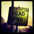

De: La Frikipedia, la enciclopedia extremadamente seria.
De: La Frikipedia, la enciclopedia extremadamente seria. De: La Frikipedia, la enciclopedia extremadamente seria.

|
Este artículo necesita ser ilustrado. Busca una afoto en nuestro depósito de imágenes o donde sea y ponla, pero que no sea pr0n, que se cabrea el señor del adSense y nos corta el grifo de los dólare. Y sin dólare no hay servidor... |
|  | ATENCIÓN
El autor de este artículo se ha olvidado de enlazar otros artículos y ha perpetrado un Deadend. |
Malvada organización criminal formada por los villanos conocidos de Caballero Rojo. Fueron renegados de su villa natal.
Fue creada por Darkness para dominar el mundo (Esto esta tan lleno de cliches), la conforman 4 miembros, curiosamente, cada uno tiene un nombre asociado a un punto cardinal.
Tambien tienen como objetivo dominar el McDonalds, pero de eso se habla despues
Estos frikis llevan una forma de vestir igual entre sus miembros. Cada uno lleva una larga tunica de cuello largo que se dobla hacia arriba dando un aspecto de misterioso (Excepto por East ya que como odia ser emo la lleva hacia abajo), cada tunica lleva una personalización de cada miembro. Tambien las tunicas se le pueden alargar el cuello y poner una capucha de tal manera que queden ocultos, lo que demuestra que no se dieron cuenta de que su pinta es suficiente para reconocerles. Tambien llevan unas marcas en la cara que apunta a su punto cardinal respectivo.
Cada miembro lleva un anillo con un kanji que representa un punto cardinal, cuando hay una situación de vida o muerte el poseedor del anillo se convierte en esa bestia. Hay 5 anillos en total:
Emo antisocial y aficionado al fuego. Representa el Punto del Norte.Es un humano originario de GATEN, su tecnica preferida es "Invocación Lava-Nax" que invoca a una enorme bestia de lava, por lo general, la usa para convatir, ya que le da flojera hacerlo el mismo. Esta enfadado con East ya que quizo que le tocara el seiryu. Quien le manda a representar el norte en vez del este.
Es un elfo oscuro que adora quemar cosas. Le gusta que le haya tocado el elemento fuego, South suele enojarse con facilidad. Su mejor amigo es North, aunque este ultimo no se lleve bien con South. Representa al sur.
Es un orco que tiene cierta rivalidad con North ya que quizo que le tocara el genbu. East, a diferencia de los demas, es un buen chico, a diferencia de los demas, que son exiliados y perseguidos, odia ser emo. Representa al este
Es un elfo que representa al oeste, es perseguido por asesinar a la primera hija de Torroja (Tranquilos, no hablamos de Destra). Es el unico miembro que se comunica mentalmente con la bestia de su anillo.
Es un miembro que abandono voluntariamente la organización llevandose consigo su anillo, que le da poder de invisibilidad, lo cual le es util para esconderse. Ya que lo persiguen por homicidio. Se desconoce su raza, no se sabe si es humano o elfo ya que su cabello esconde sus orejas. Antes de dejar la organización eran llamados los 5 del mal.
Creó la organización y por eso es el lider indiscutible de esta ultima. El creo los anillos
Es el sub-lider de la organización, por lo general, da ordenes inutiles. Darkness le dice Iggy
Autor(es):